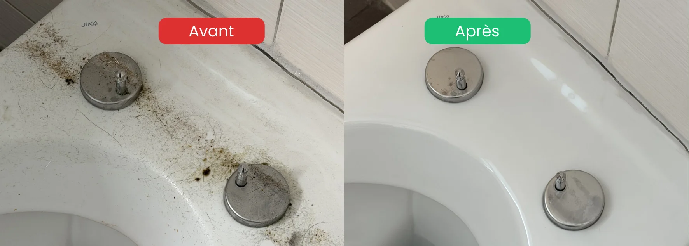

- Plus de 60 points contrôlés par une régie lors d'un état des lieux de sortie
- Pièces prioritaires : cuisine (hotte, four) et salle de bain (joints, calcaire)
- Points souvent oubliés : caisson de hotte, joints silicone, derrière les appareils
- Délai recommandé : commencer le nettoyage 1 à 2 semaines avant la remise des clés
- Astuce gain de temps : déplacer les meubles 2 semaines à l'avance pour repérer les zones problématiques
Pourquoi une checklist nettoyage fin de bail est indispensable
Chaque année, des centaines de locataires perdent une partie de leur caution parce qu'ils ont oublié un détail jugé important par la régie. Le problème est simple : ce que vous trouvez propre ne correspond pas toujours aux standards des états des lieux professionnels.
Une checklist structurée vous permet de passer chaque pièce en revue méthodiquement, sans rien laisser au hasard.
Cuisine
- Hotte aspirante : dégraissage complet du filtre, de la grille et de l'intérieur du caisson
- Four : nettoyage intérieur, lèche-frite, grilles et vitre
- Plaques de cuisson : détartrage et élimination des résidus brûlés
- Réfrigérateur : vidé, dégivré, nettoyé à l'intérieur et à l'extérieur
- Lave-vaisselle : filtre, joint de porte, parois intérieures
- Placards : intérieur et extérieur, portes et charnières
- Évier : calcaire, joints et siphon
- Crédence et carrelage : joints dégraissés
- Sol : lavé en dessous de l'électroménager également
Salle de bain
- Douche / baignoire : détartrage complet, joints silicone sans moisissures
- Robinetterie : calcaire éliminé, brillance restaurée
- WC : cuvette, abattant, réservoir, lunette
- Miroir : sans traces ni projections
- Meuble vasque : intérieur, extérieur, siphon
- Carrelage et joints : moisissures et calcaire supprimés
- Ventilation : grille dépoussiérée
- Sol : lavé sous le meuble également

Pièces à vivre : salon et chambres
- Vitres : intérieur et extérieur, sans traces ni coulures
- Cadres de fenêtres : rainures et joints nettoyés
- Portes : poignées, charnières, surface des deux côtés
- Radiateurs : entre les éléments, pas uniquement la surface
- Prises électriques et interrupteurs : dépoussiérés
- Placards intégrés : intérieur, étagères, tringles
- Parquet ou sol : lavé et sans égratignures visibles
- Plinthes : dépoussiérées et lavées
Balcon et terrasse
- Sol balayé et lavé (sans laisser couler l'eau chez le voisin du dessous)
- Balustrades et garde-corps essuyés
- Bac à fleurs vidé et nettoyé
- Caniveau d'évacuation dégagé
Cave et buanderie
- Cave vidée et balayée
- Machine à laver et sèche-linge : joints, tambour, filtres
- Évier buanderie : détartrage
Points souvent oubliés
- Boîtes aux lettres et sonnettes
- Tableau électrique : poussière
- Détecteurs de fumée : dépoussiérés (sans les démonter)
- Serrures et clés : fonctionnement vérifié
- Garage / parking : sol nettoyé, taches d'huile traitées
FAQ – Checklist nettoyage fin de bail
Combien de temps faut-il pour nettoyer un appartement avant un état des lieux ?
Pour un appartement de 3.5 pièces, comptez 8 à 12 heures de nettoyage complet en suivant la checklist. À deux personnes et bien organisé, l'opération peut se boucler sur un week-end. Pour un nettoyage professionnel, l'intervention dure généralement entre 4 et 8 heures.
Quels sont les points les plus souvent oubliés par les locataires ?
Le caisson de la hotte, les joints silicone de la douche, l'arrière des appareils électroménagers, les grilles de ventilation et les rainures des fenêtres. Ce sont précisément les zones que les régies contrôlent en priorité.
Faut-il nettoyer les murs avant l'état des lieux ?
Oui, surtout autour des interrupteurs, derrière les meubles et dans les coins. Les traces de doigts, taches et marques de meubles doivent être effacées. Les trous de chevilles doivent être rebouchés et retouchés en peinture si nécessaire.
Est-ce que le nettoyage de fin de bail est obligatoire en Suisse ?
Le locataire doit restituer le logement dans un état de propreté conforme à l'état des lieux d'entrée. Aucune loi n'impose un nettoyage professionnel, mais un logement insuffisamment nettoyé entraîne des retenues sur caution.
Que faire si je n'ai pas le temps de tout nettoyer moi-même ?
Faire appel à une entreprise spécialisée garantit un résultat conforme aux exigences des régies. Le coût du nettoyage est généralement inférieur aux retenues potentielles sur caution, et beaucoup d'entreprises proposent une garantie retour gratuit en cas de remarque.
En résumé
Une checklist nettoyage fin de bail bien suivie évite la majorité des retenues sur caution. Les points clés à ne jamais négliger : caisson de hotte, joints silicone, derrière les appareils, et tous les petits détails que la régie remarque (plinthes, prises, grilles). Commencez le travail 1 à 2 semaines à l'avance pour traiter les zones problématiques sans précipitation.